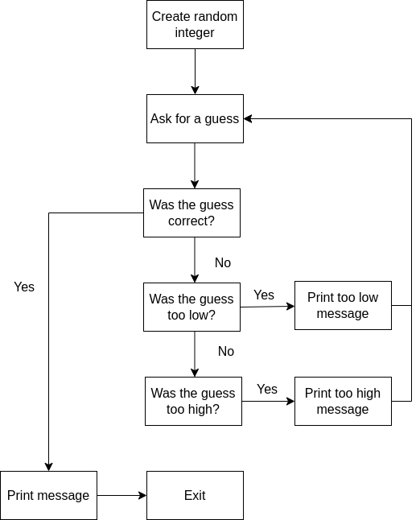

Thinking like a computer#
To write code, we have to think in terms of algorithms and logic flow. We have covered the basics of code structures above, so now we can arrange those to form algorithms and then into programs. We can think about this in terms of pseudo-code (like I wrote above). Remember, pseudo-code is not a formal language but is code written to be read by a human with no concerns about syntax. We can also depict code as a flow diagram; this is more useful as we build more complex algorithms.
However, thinking algorithmically is difficult. As humans we are amazingly good as using shortcuts, rules of thumb, and assumptions to get things done. Computers cannot do any of those things! We have to describe exactly and precisely what we want the computer to do.
Let’s build software to do some simple tasks.
Making a jam sandwich#
Write down the steps to make a jam sandwich. You can then reveal the answer
Hint
Make sure you are very precise in your description
Solution
take two slices of bread from the packet. Reject the slice if it is a end-crust and replace with another.
spread a thin layer of jam on one side of each slice
put the two slices together with the jam side of each slice touching
cut diagonally from corner to corner to form two triangles
place both triangles on a plate to serve
Creating a number guessing game#
For this exercise, we will create a flow chart of a number guessing game and write the psuedocode. Later, we will write this as actual code.
The game is as follows:
generate a random integer between 1 and 100
ask the user to guess the number
if they are correct, print a message and end the games
if they are incorrect, print a message saying if their guess is higher or lower than the number and ask them to guess again
Exercise
Draw a flow diagram of the code structure outlined above to represent the game.
Solution
This is my flow diagram.
Exercise
Now you have a flow diagram, write the psuedocode to implement this.
Solution
My code would be something like this.
print("Welcome to the number guessing game!")
print("I have thought of a number between 1 and 100")
print("Can you guess what it is?")
number = random(1,100)
guess = 0
# we create a guess that cannot be the answer...
while guess != number
guess = ask("What's your guess?)
if guess < number
print("Your guess is less than my number")
print("Try again")
else if guess > number
print("Your guess is greater than my number")
print("Try again")
else if guess == number
print("Correct! You guessed right!)
print("Bye!)
exit()
end if
Creating the sum of an integer number#
Given an integer number, like 1023, create the sum of those individual numbers. For example, 1023 would be 1 + 0 + 2 + 3 = 6
Write a list of steps and have a go at psuedo-code to do this.
Solution
split the number into individaul components to make a list
intialise our sum to zero
loop over the list and add the numbers together
number = 10456
# no language has a function to split an integer number, *but* if we turn it into a string, we can
# split it easily in most!
number_as_string = str(number)
chars = as_chars(number_as_string)
sum = 0
for c in chars
sum = sum +int(c)
print(sum)
The solution needed a bit of lateral thinking in terms of thinking how a computer would represent an integer and how you might break it up. Don’t worry if your psuedo code didn’t contain that level of detail!
Searching for a number#
Given a list of numbers: 1, 4, 5, 2, 6, 7, 8, 9, 10
Write down the steps to find the location (index) of a value in that list, let’s say the number 9.
Solution
loop through the list
if the number matches the target, exit and report the index
if the match isn’t found, exit with a negative number to indicate failure
list = [1, 4, 5, 2, 6, 7, 8, 9, 10]
target = 9
index = 0
for number in list
if (number == target)
return index
# remember to increment the index each loop!
index = index + 1
# we cna only get here if the number wasn't found
return -1
The above is a linear search algorithm. Fine for small lists, but very slow for very long lists, especially if your target is near the end. Binary search is another search algorithm used.
Create a word cloud#
We want to create a word cloud of a text file only including words that occur more than 2 times and does not include the words “and”, “the”, “or”. Let’s start with a list.
load in the text
separate into words (removing punctuation, spaces, etc.)
loop through the list of words and remove and, the, or
get a list of unique words
make an empty list of counts which is the same length as the unique words
loop through the list of words and find out where this is in the unique word list, incrementing the correct count value
loop through the words a third time, removing those where the count is less than 2
make out word cloud
Let’s start writing the pseudo-code. A possible solution is below.
Solution
text = load_textfile("our text_file.txt")
words = split_into_words(text)
for word in words
if word == "or" or word == "and" or word == "the":
remove(word, words)
unique_words = get_unique(words)
counts = zeros(length(unique_words))
for word in words:
index = get_index(word, unique_words)
counts[index] = count[index] + 1
index = 0
for count in counts
if count < 2
remove_item(words,index)
index = index + 1
make_word_cloud(words)
The code is quite complex so let’s run through an example of that. Here’s our text:
Need some sample, random, text and noise,I need some words that occur three times, sorandom, random, noise, need, times, times, need and and and
- The text above should generate word cloud containing the words:
random (3 occurrences)
need (4 occurrences)
times (3 occurrences)
Check you agree with the above.
Let’s now go through the steps. So we load in the above and split into words (steps 1 and 2):
need
some
sample
random
text
and
noise
I
need
some
words
that
occur
three
times
so
random
random
noise
need
times
times
need
and
and
and
Our next step (3) is to remove the words “and”, “the”, and “or”, so we end up with:
need
some
sample
random
text
noise
I
need
some
words
that
occur
three
times
so
random
random
noise
need
times
times
need
We then create a list of unique words (we’ll do that code later), which would give us:
need
some
sample
random
text
noise
I
words
that
occur
three
times
so
We then count the number of times those words occur, by looping over the original word list and counting them. We know there are 13 unique words. We set up a list where the count is sorted in the same location as the unique word, so our lists are like this:
Index |
Word |
Count |
|---|---|---|
1 |
need |
4 |
2 |
some |
2 |
3 |
sample |
1 |
4 |
random |
3 |
5 |
text |
1 |
6 |
noise |
1 |
7 |
I |
1 |
8 |
words |
1 |
9 |
that |
1 |
10 |
occur |
1 |
11 |
three |
1 |
12 |
times |
3 |
13 |
so |
1 |
We now have a count of each word and we loop through a final time (step 7) to remove those with fewer than 3 occurrences (or in other words with more than 2 occurrences).
Step 8 is then make the word cloud from the remaining words (“times”, “random” and “need”). We’ll not cover that here as it is quite difficult to do graphics in pseudo-code.